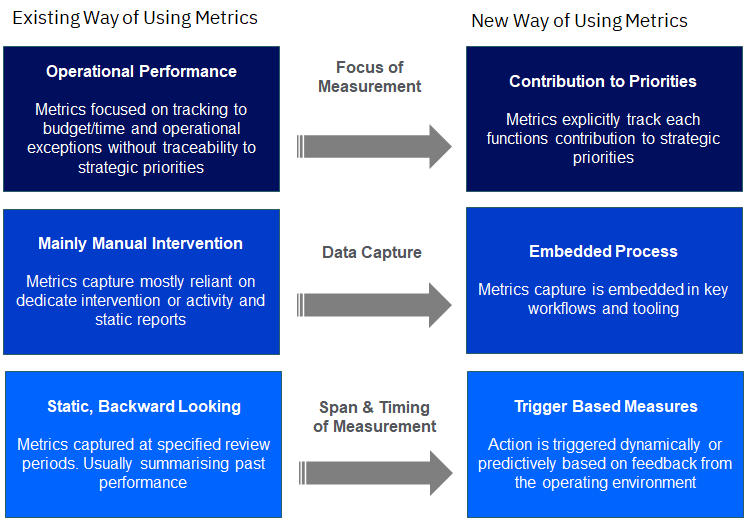
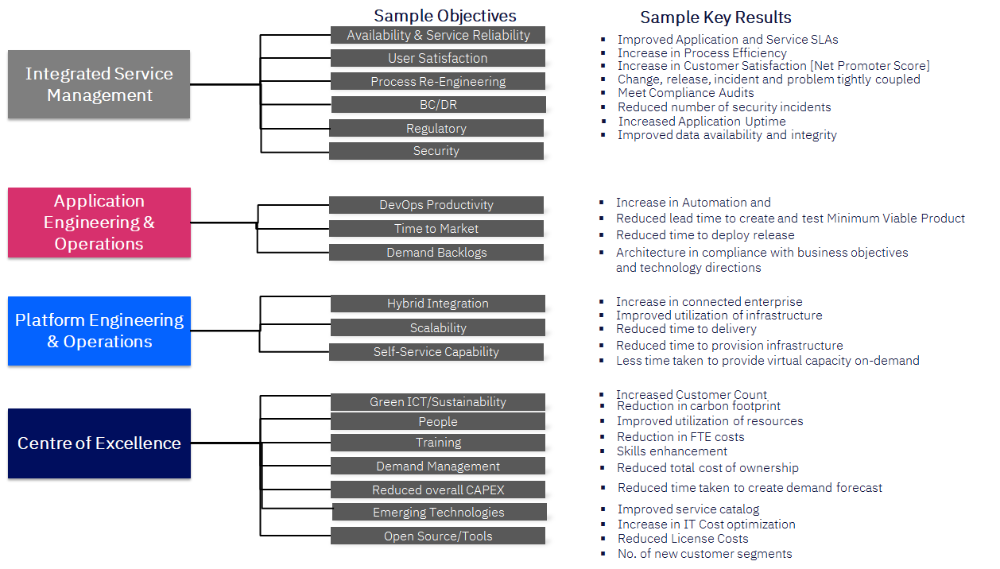
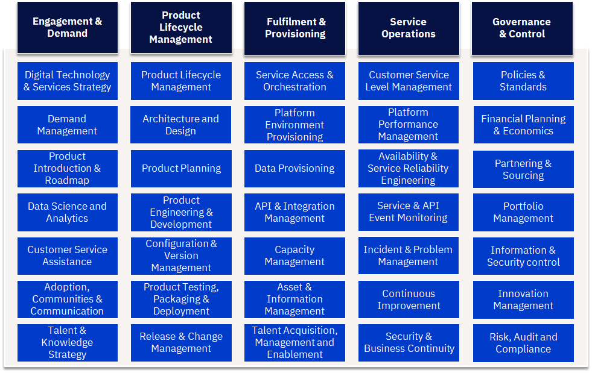
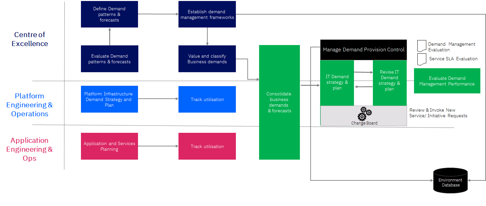
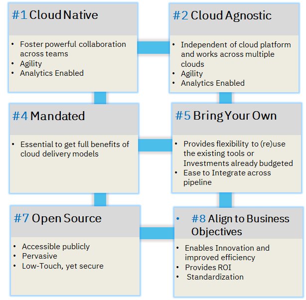
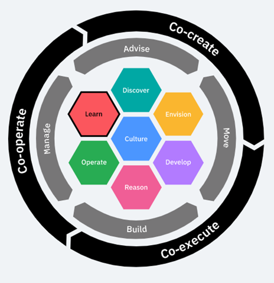
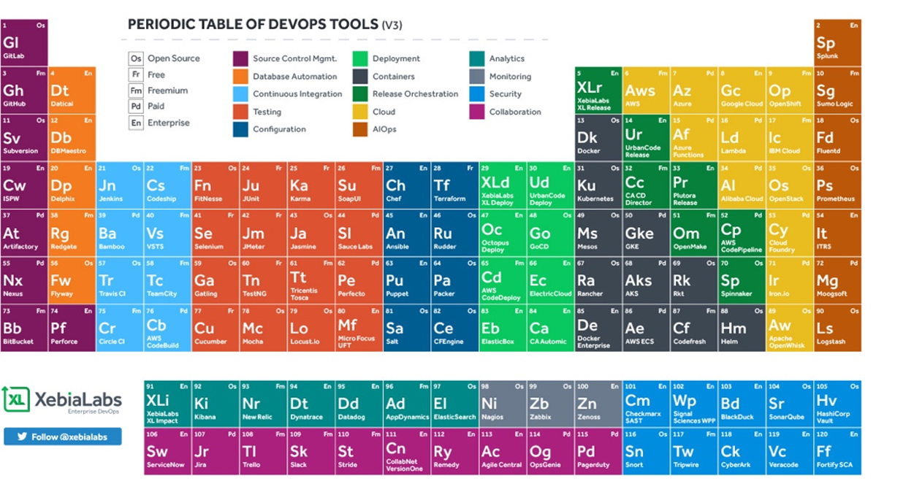

Agile Metrics, Processes & Toolchain
Table of Contents
Performance - Measuring KPIs and SLAs
How can I measure performance within my organisation in a way that proactively informs future decision-making while offering line of sight into accountability and decision ownership?
Metrics and KPIs need to change from retrospectively assessing performance to proactively driving action. Historically, performance metrics and KPIs were static measures that looked backward to assess progress and lacked traceability to an organisation’s strategic objectives.
| Metrics |
|---|
|  |
However, performance metrics must evolve to meet the demands of today’s modern IT estate. Instead of measuring past activity, metrics should be designed and implemented in a way that helps drive the organisation’s overall objectives and appropriate action, where possible, in a pre-emptive or predictive fashion. To do so, leading practice suggests organisations should use the industry recognised OKR (Objective & Key Results) approach for measuring and improving performance.
OKR
OKR is an Effective Methodology for Measuring Performance, OKR, known as Objective and Key Results, is a methodology is a system for setting, cascading and communicating goals throughout your organization. OKRs bring focus because they make it easy for companies, departments, and teams to recognize what the current priorities are, and to align them to employees personal objectives.
Benefits of an OKR:
- Focus: OKR creates clarity and focus. Everyone has fewer defined objectives, which forces prioritisation at all levels.
- Fast paced: OKRs are short term goals—typically 3 months in length. This gives employees more chances to assess and improve work.
- Better results: using short term goals creates a culture where problems are solved quickly and where every contribution matters. This results in better and more consistent results
An OKR consists of two things:
Objective - memorable qualitative description of what you want to achieve. Objectives should be short, inspirational and engaging. Objectives should motivate and challenge the team.
Key Results - set of metrics that measure progress towards objective. They should not be a task. Each objective has 2-5 key results.
For example,
Objective #1: We will improve release velocity of the sprint Q3-2019 for version X.Y of product B as measured by ….
Key Results:
- Reduce bugs found during development process by 20%
- Improve Unit testing coverage from 50% to 70%
- increase sprint capacity from 85 item (Sprint Planning ) to 100 SP
- Individual developer contributes to 20% more code review by end of every sprint
OKRs will vary across the organisation based on their priorities mapping reference OKRs to each CSOM component, such as:
- Center of Excellence Sample Objective: Drive adoption and usage of cloud services in consistent way; Sample Key Results: Enhanced skills on cloud technologies, Increased brand perception by customers
- Platform Engineering & Operations Sample Objective: Incubate new technology platforms; Sample Key Results: Faster time to provision infrastructure, Increased Automation with DevSecOps toolchain enabled
- Integrated Service Management Sample Objective: Protect live service; Sample Key Results: Increase Process Efficiency, Proactively monitor services, Provide real-time reporting on service performance
- Application Engineering & Operations Sample Objective: Accelerate the development team speed; Sample Key Results: Reduced time to delivery, Change, release, incident and problem tightly coupled
| OKR Pillars |
|---|
|  |
IT Processes
How do I adapt my processes to drive agility & speed, minimising friction without sacrificing control?
Key process underpin the capabilities required within the organisation -
Engagement & Demand: the capabilities needed to translate business strategy, needs and requests into products and platforms and ensure the right skills are available across the organisation
Product Lifecycle Management: the capabilities needed to architect, develop and release both application and platform/technology products and services
Fulfillment & Provisioning: the capabilities required to make products and services easily consumable and rapidly available for use when needed
Service Operations: the capabilities required to support and operate products and services and ensure they are performant, resilient and meet business and user service levels
Governance & Control: the capabilities required to support and operate products and services and ensure they are performant, resilient and meet business and user service levels
| IT Processes |
|---|
|  |
Example Process: Engagement & Demand > Demand Management
Its the process of understanding the patterns of the business’ behaviors and relate those patterns to the impact on the supply of cloud services, synchronizing the consumption (demand) with the capacity (supply) of IT resources, as documented in the Service Catalogue.
Objectives
- Minimize the mismatch between demand and supply
- Minimize the mismatch between demand and the service catalog
- Maximize reuse of the services in the service catalog
- Identify the need for new or modified services and capabilities
- Identify investment implications
- Minimize the lead time to service the demand
Outcomes
- Demand and capacity forecast model
- Demand Servicing Lead time
- Ability to service both cloud and legacy assets
- Predictability of budget estimates
Activities
- Define Demand Patterns
- Forecast Demand and Provision
- Manage Demand Provision Control
- Evaluate Demand Management Performance
Cloud Adoption Considerations
- Multi-cloud service catalogs
- Cloud consumption/demand policies
- Trained BRMs to represent the CIO
- Private cloud capacity constraints and AD resources
- Demand for IT technology services to support requests from AD teams
- Demand implications between cloud and legacy environments
- Auto detect service usage patterns (e.g. seasonal spikes)
- Continual refresh of 30-60-90 day demand forecasts
Process View
| Demand Management Process |
|---|
|  |
| Process Activities | Enterprise Business | Centre of Excellence | Application Eng & Ops | Platform Eng & Ops | 3rd Party Suppliers | Comments |
|---|---|---|---|---|---|---|
| Investigate demand patterns & forecasts | C | A/R | R | I | I | Business IT to operate a pull function |
| Define demand patterns & forecasts | A/R | C | C | |||
| Value & classify business demands | A/R | C | I | |||
| Consolidate business demands & forecasts | A/R | A/R | CSP together with Enterprise IT will consolidate demand across its customers. | |||
| Manage Demand provision control | C | A/R | A/R | I | ||
| IT Demand Strategy & Plan | A/R | C | C | I | Business IT own development, and any subsequent revision of the IT Demand Strategy and Plan | |
| Platform Infrastructure Demand Strategy & Plan | C | C | A/R | I | ||
| Application and Services planning | I | C | A/R | C | I | |
| Track utilization | I | I | A/R | A/R |
IT Toolchain
Toolchain is a set of tool integrations that support development, deployment, and operations tasks. In the landscape of fragmented tools and processes, it is important for the enterprise to integrate tools and practices from multiple vendors and open source projects.
For an agile and innovative team, a IT tool chain is required which offers right tools for the job while keeping some standardization, allow for automating and redefining processes with AI and removes bottlenecks & delays in the production line, enables collaboration across eco-system & integration across team silos and embeds digital processes & methods and auto-checks for compliance & quality.
| Toolchain |
|---|
|  |
Key focus and principles of the toolchains:
- Best of Breed
- Meet business demands, Objectives and maximize flow in IT Value Streams
- Fully Secured and Complaint to standards
- Improve Visibility and Aid Automation
- Reduce Integration Challenges
- Supports Continuous Integration and Delivery
| Tooling |
|---|
|  |
What are the tools required at the minimum?
- Planning and Collaboration: These are the tools that help accelerate the plan and provide transparency to stakeholders and collaboration opportunities (Slack)
- Source Control: Manage the source code across all properties and assets
- Tracking and escalation issues: To maintain a catalog when they troubleshoot problems or resolving issues and followed by a surge in responsiveness (Jira)
- Development (CI/CD): Collaborative tools that provide dashboards to stakeholders and developers, providing transparency and the opportunity to work together during the CI/CD process
- API/Integration
- Security: Integrating security tools, processes and policies to the DevOps toolchain
- Configuration management: A convenient way to standardize configurations across assets (Chef and Puppet)
- Automation and Testing: Collaborative tools to enable continuous testing and test automation
- Brokerage and Orchestration
- Operations and Monitoring: Tools for monitoring provide essential information about the functioning of the software and the presence of security issues and threats.
- Cloud Management
- Observability and Analysis
| Periodic Table of DevOps Tools |
|---|
|  |